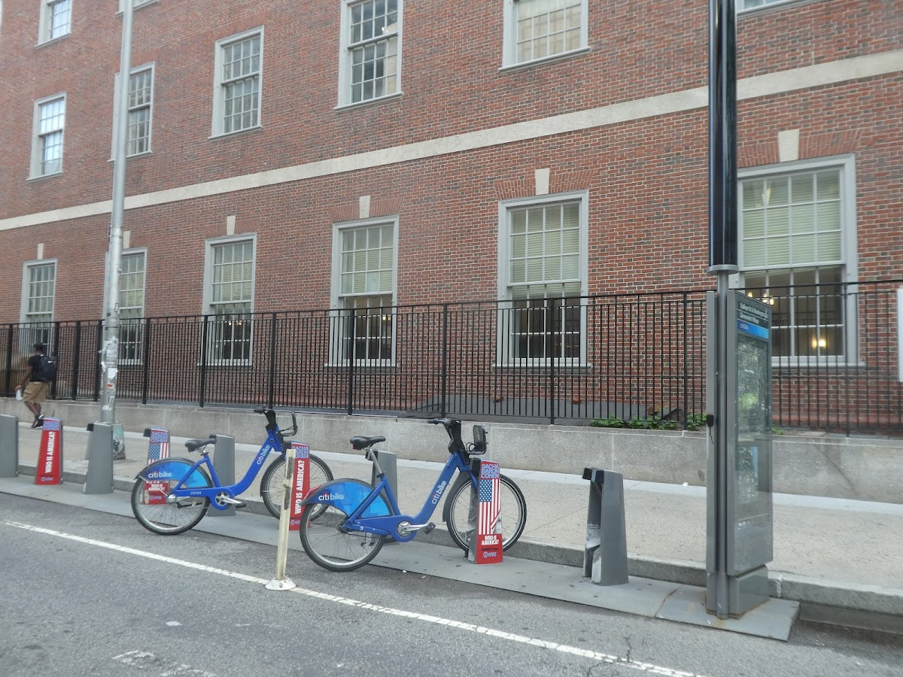
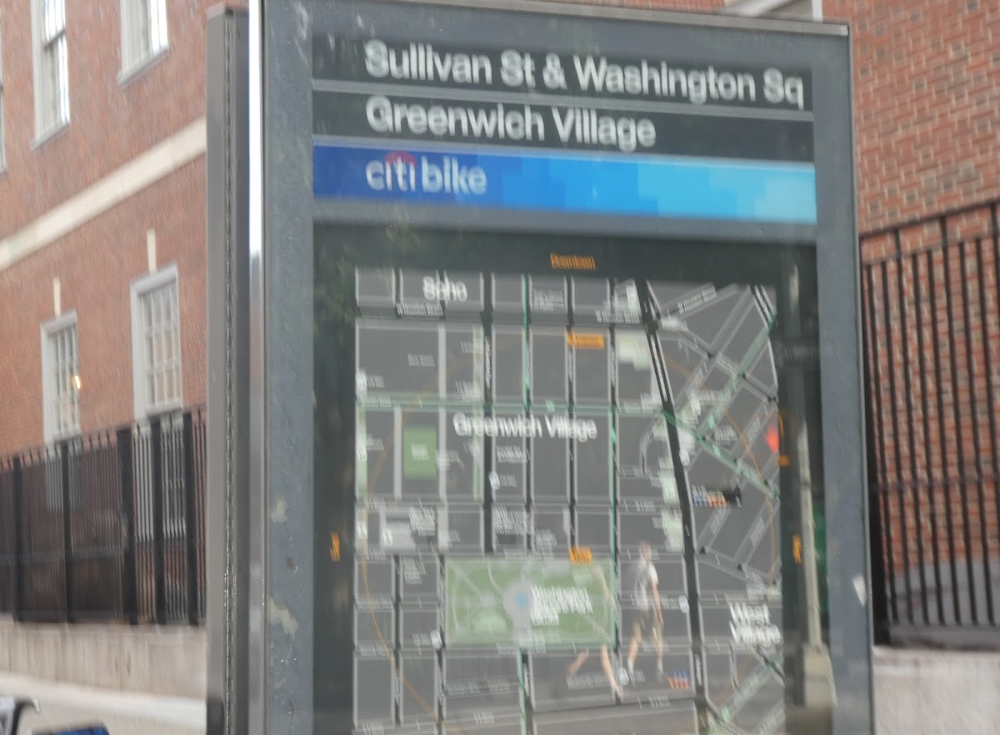
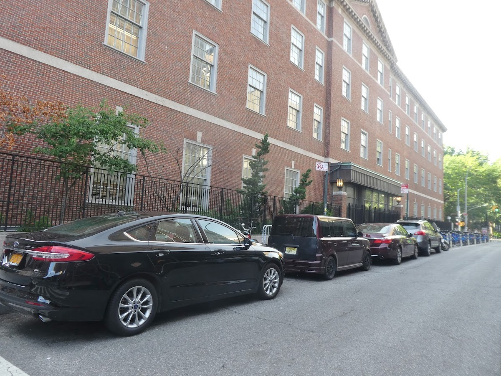
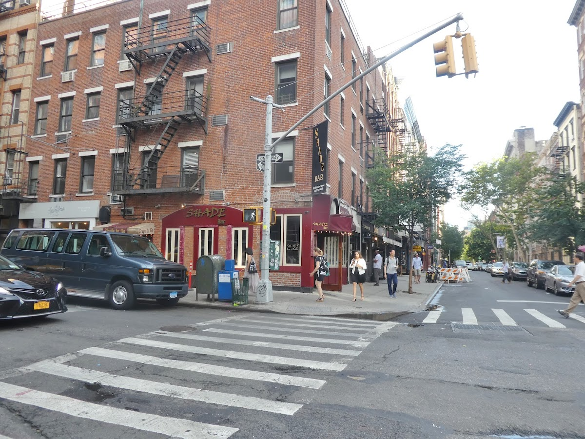
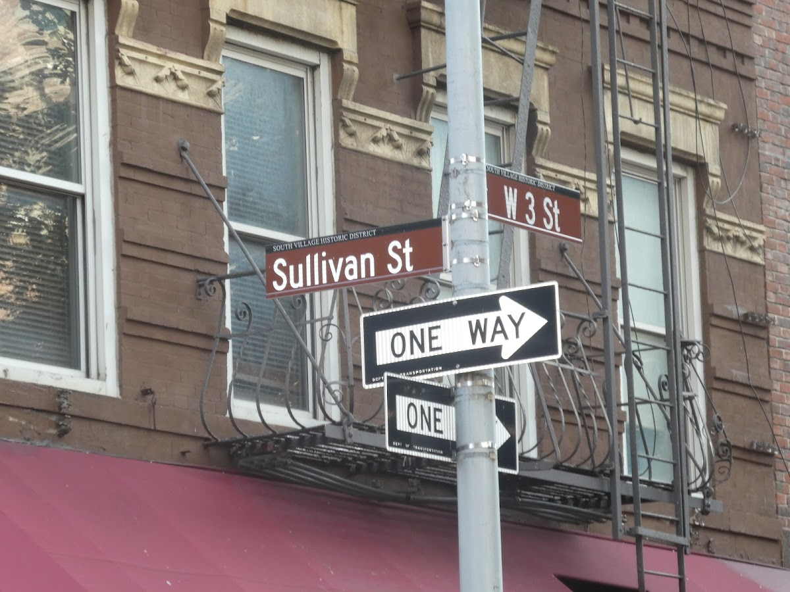

Shared spaces
Sullivan Street
A street in Manhattan's Greenwich Village, known for its historic buildings and communal garden.
Background
Sullivan Street has been a part of Greenwich Village since the early 19th century. The communal garden in the middle of the block was established in the 20th century, providing a shared green space for residents. The street is lined with well-preserved townhouses and is a testament to the neighborhood's historic charm.
Original AI-assisted background; not independently verified.
From the original map
In the middle of this block there is a beautiful shared communal garden!
Homes and shared residential spaces may be private. View from public streets unless entry is clearly permitted; map pins are reference points, not confirmed entrances.
Nearby places
Straight-line distances, not walking routes.
Discussion & corrections





Photo credits
Pako Valera40.72847, -74.00130 · Explore the surrounding area ↗